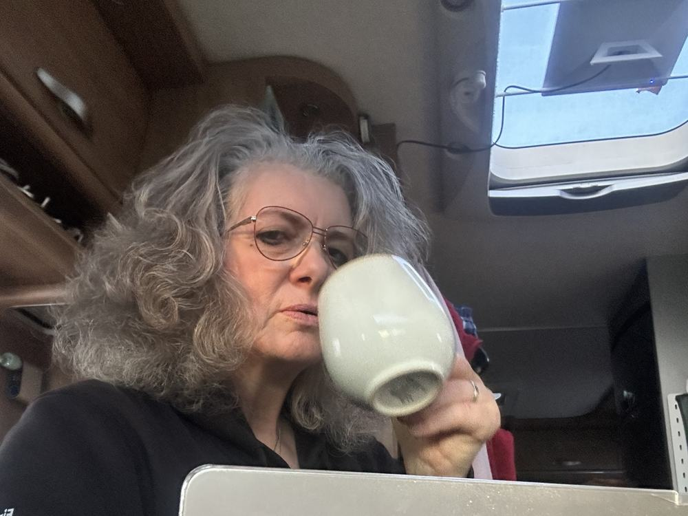

Neue Wege beginnen selten mit einem fertigen Plan.

Manchmal beginnt eine neue Perspektive genau dort, wo man sie am wenigsten erwartet.
Es gab eine Zeit, in der ich mir nicht hätte vorstellen können, im Network Marketing tätig zu sein. Zu groß waren meine Vorbehalte gegenüber einer Vertriebsform, die ich vor allem mit Verkaufsdruck und unrealistischen Versprechungen verband.
Dass ich mich dennoch näher damit beschäftigt habe, hatte zunächst nichts mit beruflichen Plänen zu tun. Es begann mit meinem Hund und der Suche nach einer Ernährung, die zu ihm passt.
Aus einer persönlichen Erfahrung wurde Neugier. Und irgendwann entstand die Frage, ob sich daraus auch beruflich etwas entwickeln könnte. Nicht als radikaler Neuanfang, sondern Schritt für Schritt.
Erfolg hat für mich auch mit Haltung zu tun.
Ich möchte Menschen nicht überreden. Ich möchte ihnen zuhören.
Ich möchte ihre Wünsche verstehen und gemeinsam herausfinden, ob eine Zusammenarbeit sinnvoll ist. Dazu gehören Ehrlichkeit, Verlässlichkeit und die Freiheit, auch Nein sagen zu dürfen. Ein gutes Netzwerk wächst für mich dort, wo Menschen sich gegenseitig unterstützen, Verantwortung übernehmen und ihren eigenen Weg gestalten können.
Freiheit braucht Eigenverantwortung.
Mich reizt die Möglichkeit, unternehmerisch tätig zu sein und den Arbeitsalltag selbst zu gestalten. Eigene Ideen verfolgen. Vielleicht eines Tages auch unterwegs arbeiten, mit meinem Hund an meiner Seite.
Gleichzeitig weiß ich: Ein eigenes Geschäft entsteht nicht von allein. Es braucht Einsatz, Geduld, Lernbereitschaft – und ein gutes Gespür für die eigenen Grenzen. Auch das habe ich auf meinem Weg gelernt.
Vielleicht beginnt auch dein nächster Weg mit einem Gespräch.
Du musst keine fertige Geschäftsidee haben. Und du musst auch nicht bereits überzeugt sein. Wenn du neugierig bist, wie ich arbeite und was eine Zusammenarbeit bedeutet, erzähle ich dir gern mehr – offen und ohne Erwartungsdruck.
Meine Geschichte im Podcast:
Ich arbeite als selbstständige Vertriebspartnerin mit REICO Vital-Systeme. Die Tätigkeit ist mit unternehmerischem Aufwand und Risiken verbunden; ein bestimmtes Einkommen ist nicht zugesichert.
Du kannst alles schaffen. Die Grenzen sind nur in deinem Kopf.
Mit KI erstellt: Hier ist mein KI-Zwilling unterwegs – nicht ganz 1:1 ich, und diese Abenteuer habe ich so nicht erlebt.